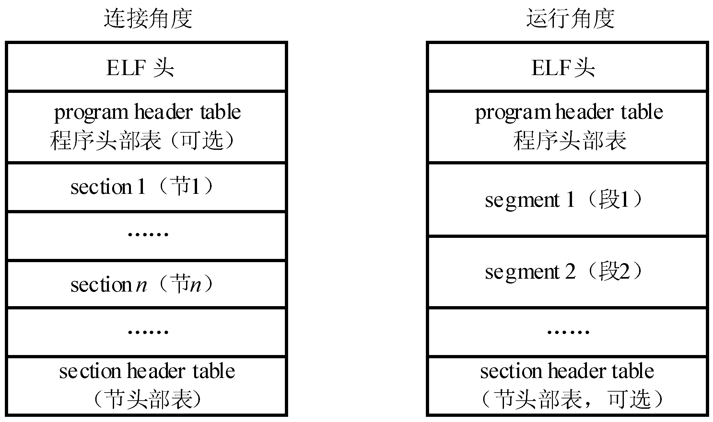

😀 分析一下
上一小节，大家一脸懵逼的进行了操作，下面来解释一下。
先编写mbr.s，然后通过gcc编译成可链接目标文件mbr.o（注意-m32参数）
然后用ld进行链接，然后用objcopy进行一些操作：
$ld -m elf_i386 -e start -Ttext 0x7c00 mbr.o -o mbr.elf
$objcopy -S -j .text -O binary mbr.elf mbr.bin
exercise8：面对这两条指令，我们可能摸不着头脑，手册前面...... 所以请通过之前教程教的内容，说明上面两条指令是什么意思。（即解释参数的含义）
在执行这两段命令之后，我们发现mbr.bin的大小为65字节，远远少于之前的3k多。
下面使用的genboot.pl其实是一个脚本程序，虽然我们没学过这种脚本语言，但可以大概看出来，它先打开mbr.bin，然后检查文件是否大于510字节，然后......
exercise9：请观察genboot.pl，说明它在检查文件是否大于510字节之后做了什么，并解释它为什么这么做。
好的，qemu可以成功运行我们这个简易版的mbr了！
深入探索
大家有没有发现，我们并没有使用elf格式的mbr.elf，而是使用了bin格式的mbr.bin？
exercise10：请反汇编mbr.bin，看看它究竟是什么样子。请在报告里说出你看到了什么，并附上截图
实际上，我们发现elf格式并不是执行代码的必备条件，它可以是exe文件，可以是elf文件，甚至是很原始的bin文件。

但是为什么我们常常使用elf格式的文件呢？
想想elf文件里都有什么，elf头，程序头表......这些正是导致elf格式文件体积膨大的原因。我们通过elf头中的信息找到各种不同的符号和信息，从而在链接和加载的时候，按照这样固定的流程进行解析和重组。并且，我们可以通过强大的工具链（Tool chain，比如gdb、objdump）来对程序进行解析和重组。
也就是说，如果可以的话，我们可以制定一种自己的程序文件格式。编写一套自己的工具链来解析、构建可执行文件！！！
challenge！！！
challenge1：请尝试使用其他方式，构建自己的MBR，输出“Hello，world!”
这是对我们的第一个挑战，目的是帮助大家更深刻的理解MBR是如何执行的。我这里给出几种可能的方法。如果你有自己的方法就更好了！
- 第一种（基础）：还是使用我们提供的汇编语言，通过编写一段
C语言或者Python代码来代替genboot.pl文件，来生成符合mbr格式的mbr.bin - 第二种（基础）：使用
C语言或Python自己解析elf文件格式，来代替objcopy和genboot.pl，来生成符合mbr格式的mbr.bin - 第三种（进阶）：直接使用汇编语言编写代码（在汇编文件里面编写指令填充剩余字节和添加魔数），通过
nasm编译器直接编译成512字节的mbr.bin - 第四种（困难）：像上一节一样，编写汇编代码，但用nasm编译成其他目标格式（如exe，macho32等），最后抽取出代码部分！
- 你自己的想法......
我们鼓励你去尝试高难度的操作，但是为了避免卷怪，以上方法任选一种去实现就好了（分数几乎不会有差别），并且要在实验报告里面说明你选择的方法是什么，和如何实现的（并在challenge文件夹里面附上你的代码）。
补充材料
gcc输出的可执行文件格式都是Unix传统的ELF格式，而nasm汇编器（注意是汇编器）可以输出多种目标格式（比如我们熟知的windows对应的exe，macos对应的macho32，原始的bin文件......）。
上面第三种思路的同学可以直接把汇编代码编译成512字节的bin格式，第四种思路的同学可以先编译成任意其他格式，再通过某种办法从中把可执行代码抽取出来......
对于选择第三种思路的同学，这里提供nasm汇编的资料：https://asmtutor.com/#top
你们甚至可以在网上找到第三种思路的代码，可以借鉴，但是一定要理解！